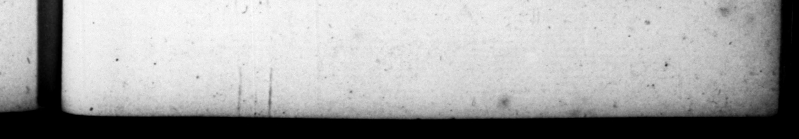

ow IW > |S = £ palam factum eſt, non ſecus atque in domeſtico luctu mrentibus publice cunctis, Seedicto con; Curiam cueurrit : hleratiique adhuc fori- - apertis, tantas mortao gratias egit laudeſque congeſſir, quantas ne vivo qui— unquam atque præ · tle * . natus prius VOCaretur, bas, deinde C. SUET. TRANQUILLI. by "1 # P44 , all wh | c proclemation, drew ing the doors of their afterwards opening uch thanks, and he praiſes naw — er 4 m, Fe» 1.4 | 72423, © Ap „7 FLAVIUS DOMITIANUS * XII. SEEEEATEEEEETETEG TENG · & . & x & & & ccc c x c&c x CAPPT-L/ 9 I, fg OMITIANUS Sp narus eſt 1x Kalend. Novembris, patre conſule deſignato, inituroque menſe inſequenti honorem, ione urbis ſexta, ad Malum 1 cum, domo, quam poſtea in * gentis Flavia cont. Pubertatis ac prima adoleſcentis tempora, tanta lum vas argenteum in uſu ha beret. Satiſque conſtat Clodinm Pollionem pretorium virum, in quem eſt poema Ncronis, quod infcribicur Luſcio, chiinopia, tantaque infamia geſiſe tertur, ut nul rograrhum ejus conſervaſſe, & nonnunquam protuliſſe, noctem ſibi - pollicentis : nec defuerunt, qui affirmarent corruptum Domitianum & 2 Nerva ſucceſſore mox ſao. . Bello Vicelliano confugit in duced, wherein he upon the mimb of the calends of november, when ©) ©6) bis father was conſul elect, being to enter upon his office the month ing, in the fixth ward f the city, at the Pome-granate, in the houſe which he afterwards converted into 4 temple of the Flavian family. He is ſaid to have ſpent the time of - ny ny + 0 much wan — at no plate 4 : him, And it's well known, that Clediu Pollio 8 pretorian gent #& int whom there is @ poem of 7 extant, mtitled Luſcio, kept a note wy» aer bis band, which he ſometimes proig bs lodging. 4 5 —. 4 N. onne foo pret ed to io $5. Was catamite 4 — V „ him. In Vitellins's war 5 958 OMITIAN war born D d into the capitol with his nne ings and à part of the troops they then bad in town, But the enemy breaking in, and the en
